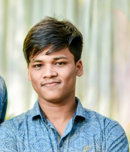
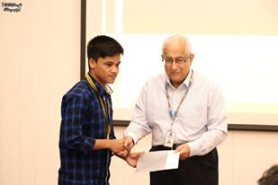
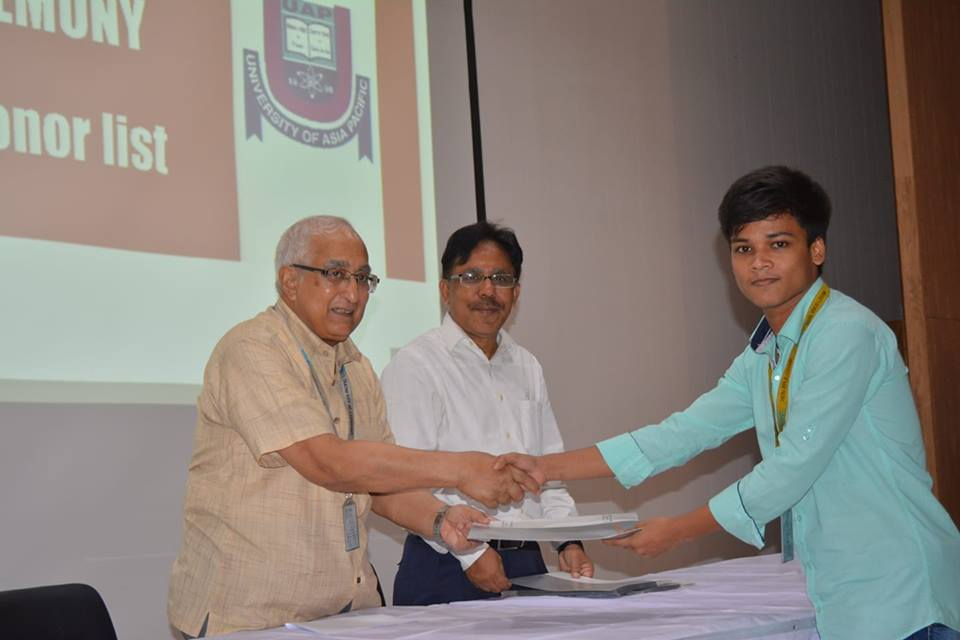
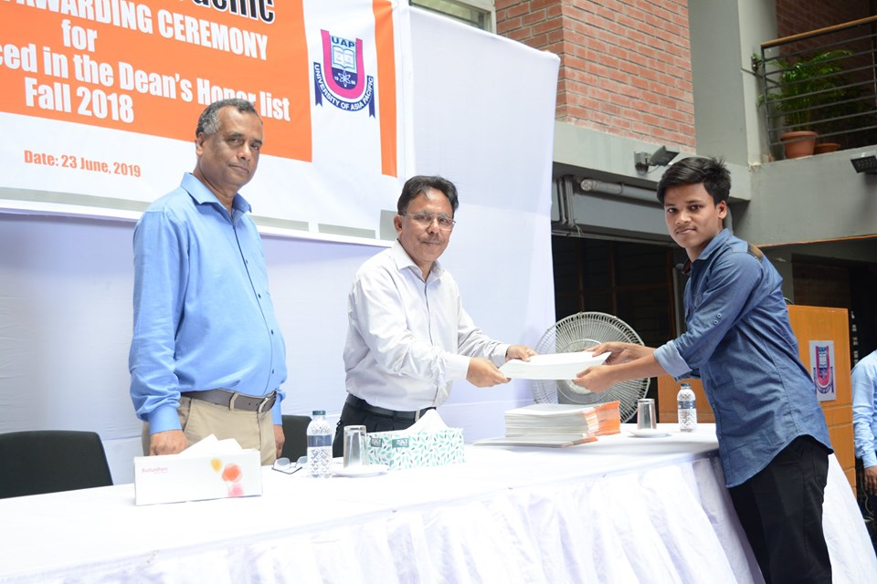

Eimon Hossain TaiefStudent
Department of Computer Science and Engineering
Email:eamonhossainkts@gmail.com |
 |
I am an student in the department of Computer Science and Engineering at University of Asia Pacific.
I earned by SSC in Science from Kaman Khola O.P.M Accademy and
I complete my HSC in Science from Laxmipur govt. collage.
Now I am studing at University of Asia Pacific.
I allow myself to forgive, it will allow me to move beyond the pain, to a place of peace.
I will take the time to notice and be thankful for the little things.I want to be lead a very
simple life because of i have no right to hurt others.I always pray my almighty to keep save other
and also me.I always follow some rule those are
| When I grow up, I want to be a PILOT because it's a fun job and easy to do. That's why there are so many PILOTS flying around these days. PILOTS should be brave so they won't get scared if it's foggy and they can't see, or if a wing or motor falls off they should stay calm
The salary PILOTS make is another thing I like. They make more money than they know what to do with. This is because most people thing |
| VC's Honors in spring 2018  |
VC's Honors in fall, 2018  |
Dean,s Honors in fall, 2018  |
I want to be a researcher on my own terms. I don’t need to be the highest-funded, have the highest h-index of all time,
or work at the most-prestigious university in the world. My goals are (1) build things/ideas with my name on it,
(2) conduct research in a breadth of settings, and (3) get undergraduate college students excited about careers in computer science.
I want all of these things to happen in my career in order of soonest-to-latest:
| 1.IT Companies: Most of computer science students dream of Getting job in Google, Microsoft, Apple etc. Highly paid job with lavish life. |
| 2.Higher Studies: Go for a master then PhD then postdoc then either you can land as in some good IT company research department or Professor at University. |
| 3.Entrepreneurs: A good idea can change life. Many examples like Facebook, Whatsapp etc. |
| Exam | Grade | Passing Year | Institution |
|---|---|---|---|
| JSC | 4.08 | 2010 | Kaman Khola O.P.M Acaademy |
| SSC | 5.00 | 2013 | Kaman Khola O.P.M Acaademy |
| HSC | 4.08 | 2015 | Laxmipur Govt. Collage |